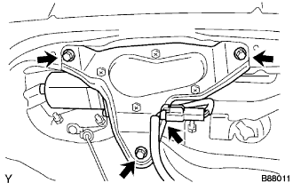
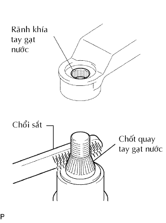
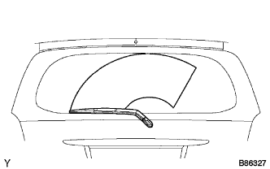
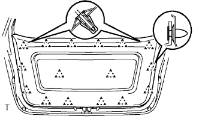

MÔTƠ GẠT NƯỚC PHÍA SAU > LẮP RÁP |
| 1. LẮP CỤM MÔTƠ GẠT NƯỚC SAU |
|  |
Lắp môtơ gạt nước bằng 3 bulông.
Lắp giắc nối.
| 2. LẮP VÒNG ĐỆM MÔTƠ GẠT NƯỚC SAU |
| 3. LẮP CỤM TAY GẠT VÀ LƯỠI GẠT NƯỚC PHÍA SAU |
Dừng môtơ gạt nước ở ở vị trí ngừng tự động.
|  |
Lau rãnh khía của tay gạt nước với dũa tròn hay tương được.
Lau rãnh khía của chốt quay tay gạt nước với dũa tròn hay tương đương.
|  |
Lắp tay và lưỡi gạt bằng đai ốc. Chắc chắn rằng tay và lưỡi gạt đến vị trí như trong hình vẽ.
Hoạt động gạt mưa sau trong khi phun nước lên kính.
Chắc chắn rằng không có va chạm giữa lưỡi gạt và trụ.
| 4. LẮP CỤM TẤM ỐP TRANG TRÍ CỬA HẬU |
|  |
Lắp tấm ốp và cài khớp 16 kẹp.
| 5. NỐI CÁP ÂM ẮC QUY |
| 6. TIẾN HÀNH THIẾT LẬP BAN ĐẦU |
Tiến hành thiết lập ban đầu (Xem trang Kích chuột vào đây).